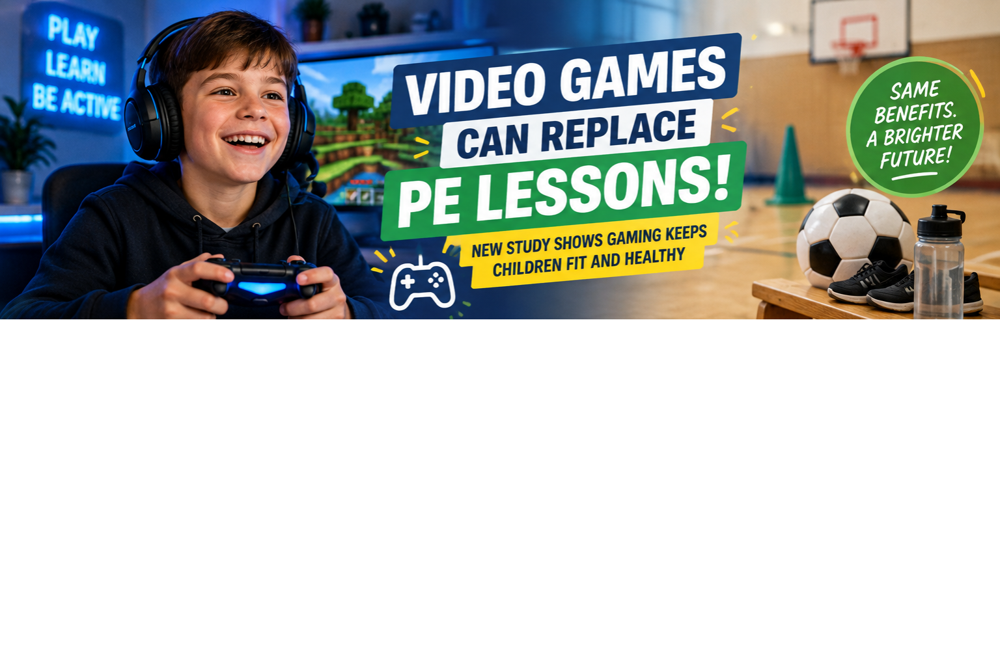
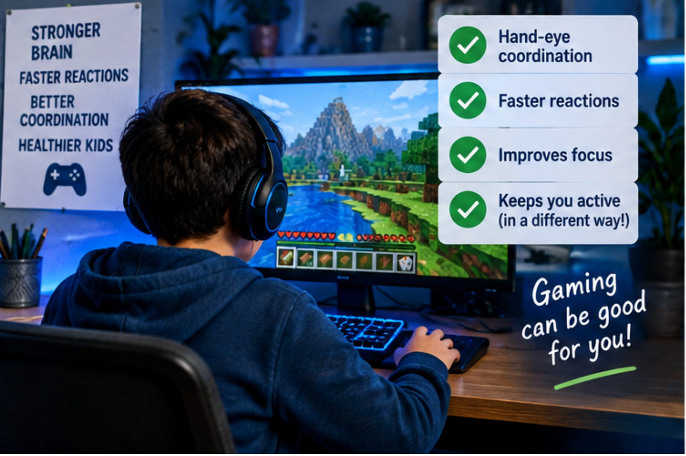
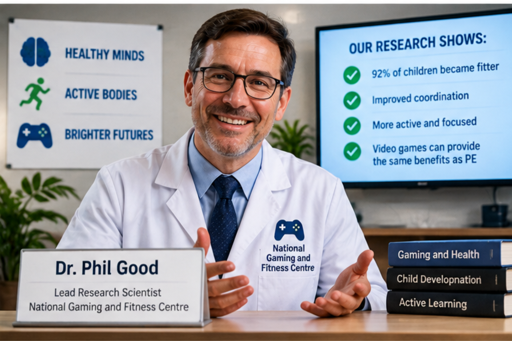

Schools Could Replace PE Lessons With Video Games
A new study says video games may help children improve reaction speed, movement and hand-eye coordination.

🎮 What did the study find?
The study looked at children who played fast video games for 30 minutes.
Researchers said many children had faster reactions after playing.
Faster Reactions
Children reacted 34% faster after gaming.
Better Fitness
92% of children became fitter after one week of gaming.
Same as Running
30 minutes of gaming is equal to 30 minutes of running.
🏫 What could change in schools?
The new plan says schools may be allowed to replace one PE lesson each week with gaming.
Some schools could use racing games, sports games and even Minecraft.


🧱 Minecraft approved as exercise?
Researchers say building, jumping and running in Minecraft can improve fitness in the real world.
They say Minecraft may be added to school PE lessons next year.
Would you choose gaming instead of PE?
Schools may soon have to decide if gaming should count as physical exercise.